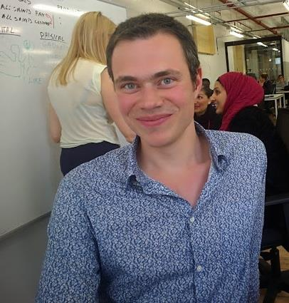

 Bonjour,
vous êtes ici chez un consultant et développeur Web freelance passionné sur Paris ! J'adore travailler sur des projets Web excitants.
Vous aussi ? Prenons un café ensemble !
Ce que j'adore :
- prototyper rapidement avec des technos sympas (Ruby on Rails, cloud computing, etc...)
- mettre en place des outils et méthodologies agiles
- communiquer efficacement
- itérer très régulièrement
- obtenir rapidement une application de qualité qui corresponde vraiment aux besoins du client
Projets Open Source
Pour les développeurs c'est aussi une grande source de savoir et de partage.
Vous trouverez sur mon compte Github mes principales contributions au monde de l'open source...
Dernières conférences publiques
Décembre 2012
Février 2012
Avril 2011
Avril 2011
Projets
| Nom | Date | Description | Site | Technologies |
|---|---|---|---|---|
| France Télévisions | 2012-2013 | Mission chez France Télévisions Éditions Numériques. Lead Developer | francetelevisions.fr | Ruby on Rails 3 MongoDB ElasticSearch Redis |
| Simplib | 2012 | Application de partage et de communauté autour de sites Web. Lead Developer | simplib.com | Ruby on Rails 3 MongoDB Twitter bootstrap |
| Reewardio | 2012 | Application mobile de fidélité nouvelle génération. Lead Developer | reewardio.com | Ruby on Rails 3 MongoDB |
| Consulting Café | 2012 | Site de partage et d'informations destiné aux consultants. Lead Developer | consultingcafe.com | Ruby on Rails 3 MongoDB |
| Skillstar | 2011-2012 | Jeux vidéo en ligne d'adresse et de connaissance. Possibilité de parier de l'argent en affrontant les autres joueurs. Le jeu est télévisé certains matins sur la chaîne nationale française M6. Developer | skillstar.com | Ruby on Rails 2 jQuery Redis node.js |
| Campingavenue | 2011 | Plateforme de réservation de campings, bungalows et chalets en Europe. Lead developer | campingavenue.com | Ruby on Rails 3 |
| Bookandgolf | 2010-2011 | Plateforme de gestion de planning et de vente à destination des clubs de golf. Lead developer | bookandgolf.com | Ruby on Rails 3 Redis & Resque backbone.js Sphinx |
| Lollidays | 2010 | Réseau social dans le domaine des activités de loisirs et de divertissement. Developer | lollidays.com | Ruby on Rails 2 Event Machine Sphinx |
| The Sphere | 2009-2010 | Réseau social "d'extrême luxe". Developer | the-sphere.com | Ruby on Rails 2 Sphinx |
| Keldelice | 2008-2009 | Site internet sur la gastronomie française. Developer | keldelice.com | Ruby on Rails 2 Sphinx |
Formations et certifications
| Nom | Date | Site |
|---|---|---|
| Certification "Ruby Association Certified Ruby Programmer Silver" | 2010 | ruby-assn.org |
| Formation 'Formateurs : construire vos actions de formation' chez Latitude (conseil en communication et organisme de formation) | 2009 | latitude.fr |
Contact
LEELIA
159 rue de Charonne
75011 PARIS
e-mail : nicolas@leelia.fr
Dirigeant de LEELIA, une entreprise spécialisée dans le développement Web agile :).